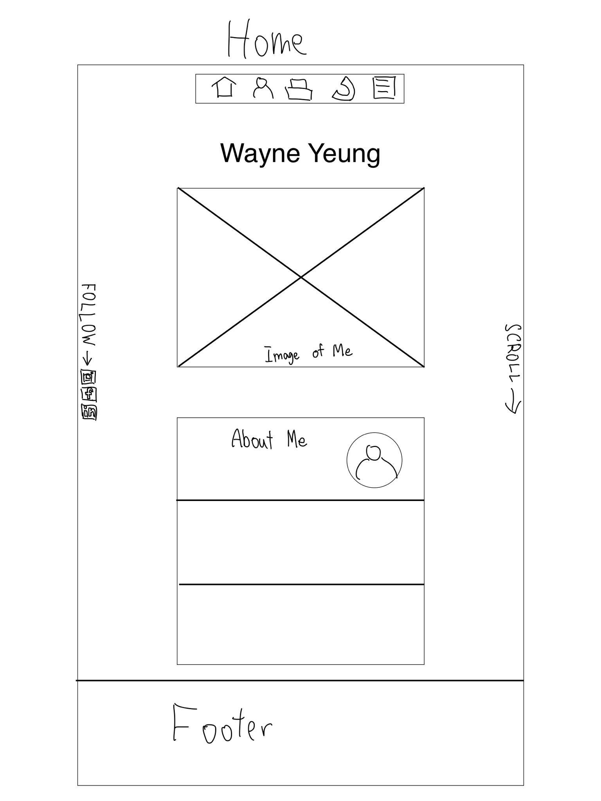
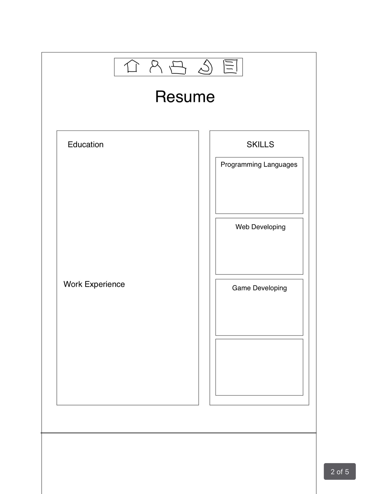
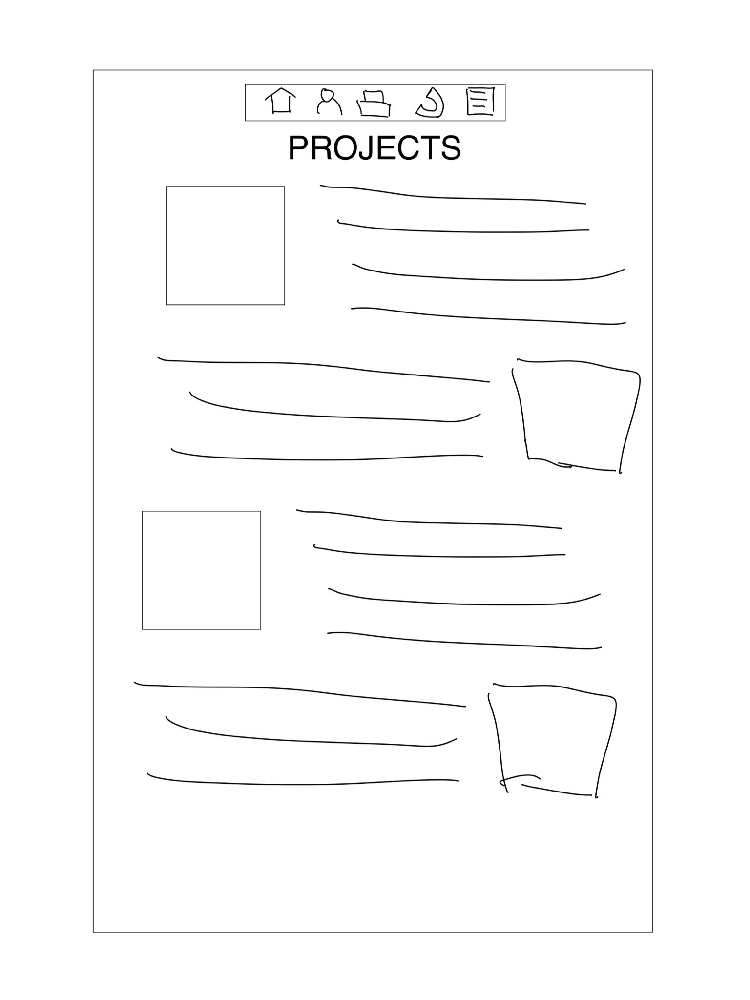
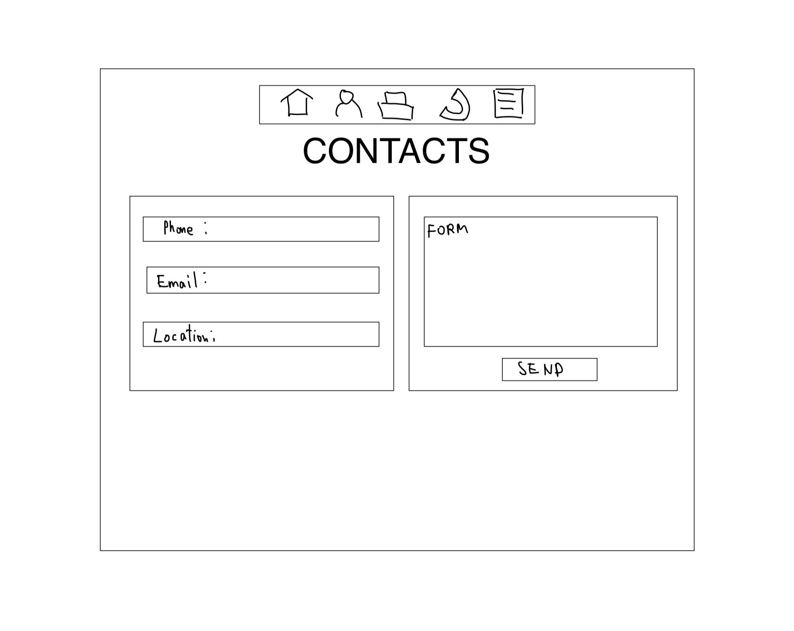
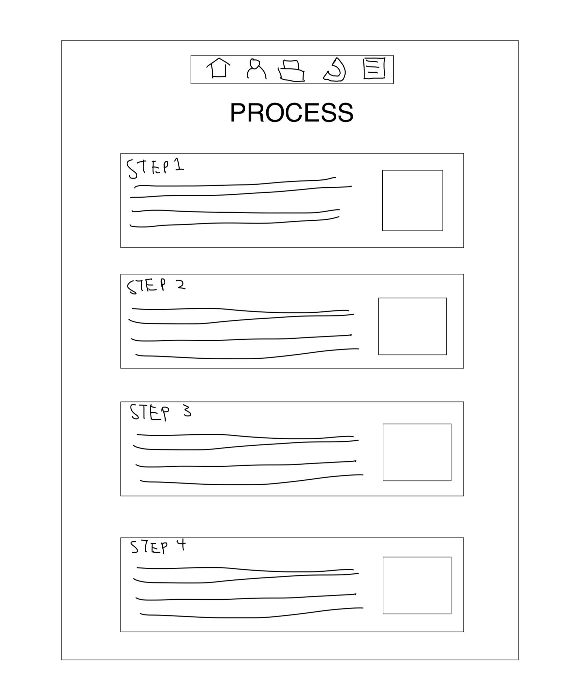

The Process
Explore the detailed steps behind this website development.
Step 1: Information Architecture
Conceptualizing the Navigation of the website.

Thought Process Behind the Creation of the IA
When designing the Information Architecture (IA) for my personal website, the primary goal was to create a clear and intuitive structure that allow users to easily access and understand the content.
- User-Centered Design: Considering what users would want to find when visiting my website.
- Hierarchy and Organization: I arranged these pages in a hierarchical manner, with the Home Page acting as the central hub.
- Associative Navigation: Beyond the primary navigation structure, I also included associative links that allow users to jump between related content areas.
- Balanced Content Distribution: I paid special attention to how content is distributed across the site. Each section is designed to balance detailed information with visual elements.
- Visual Consistency: The final IA diagram also reflects a consistent visual theme across the site. By maintaining a uniform structure and design language, users can intuitively navigate the site, finding the information they need without confusion.
This IA serves as the foundation for the entire website, guiding both the design and development processes to ensure that the end product is both functional and user-friendly.
Step 2: Wireframes
Sketching Out the Basic Layout of the Website
Home Page
The Home Page wireframe features a top navigation bar for easy access to different sections of the website. The hero section prominently displays the user's name, "Wayne Yeung," with a large image below. An "About Me" section provides a brief introduction, and a footer at the bottom includes important links and social media icons.
Resume Page
The Resume Page wireframe highlights the user's educational background in a dedicated section, along with detailed work experience. The skills section is divided into categories, showcasing technical and professional skills for a comprehensive overview.
Projects Page
The Projects Page wireframe organizes projects with images and brief descriptions, offering a clear and concise overview. This layout encourages users to explore more details about each project.
Contact Page
The Contact Page wireframe includes fields for phone number, email, and location, along with a simple form for users to send messages directly. This design facilitates easy communication between the user and website visitors.
Process Page
The Process Page wireframe outlines the different steps involved in the project process, with each step detailed in a separate section. This design ensures that users understand the workflow and methodologies used.
Step 3: Writing the code
During the development of this website, I utilized two key icon libraries:
- Font Awesome: This library was used in the navigation bar for icons such as the home icon, user icon, briefcase icon, and others. These icons help enhance the visual appeal and usability of the navbar.
- Devicons: The Devicons library was used in the Skills section of my resume. It provided a set of icons representing various programming languages, developer tools, frameworks, and libraries, making it easier for viewers to quickly recognize the technologies I am proficient in.
Below is an example of how these libraries were integrated into the website:


Step 4: Redesigning
In this step, I focused on enhancing the user experience of the project page by implementing expandable project cards. The goal was to create a more interactive and visually appealing layout. I utilized JavaScript to enable the cards to expand and display additional information when clicked, giving users a more detailed view of each project without cluttering the page.
Each project card contains a brief overview of the project, and when expanded, it reveals more information along with a link to the project's GitHub repository. The redesign makes it easier for users to browse through my projects while keeping the interface clean and intuitive.
This redesign not only improves the aesthetic appeal of the page but also enhances functionality, making it a key part of the overall user experience on my website.


Step 5: Finalize
The final design of my website reflects a minimalist, modern approach aimed at showcasing my projects and skills in a clear and visually appealing manner. The color scheme was carefully chosen to ensure a clean, professional look that is easy on the eyes, with dark tones that provide a sleek and sophisticated feel.
The layout is structured to guide the user through my portfolio seamlessly:
- Navigation Bar: A sticky, simple, and intuitive navigation bar sits at the top of each page, ensuring easy access to all sections of the site.
- Content Organization: Each page is organized into distinct sections, making it easy for visitors to find the information they need. The use of cards for project previews adds a dynamic element to the design, while keeping the overall layout clean and organized.
- Visual Hierarchy: Key information is highlighted through the use of typography and spacing, ensuring that visitors' attention is drawn to the most important content first. Headers are bold and clear, making it easy to scan the page.
- Interactive Elements: The project cards are expandable, allowing users to delve deeper into the details of each project without cluttering the page. The use of JavaScript enhances the interactivity of the site, providing a more engaging user experience.
- Responsive Design: The website is fully responsive, adapting smoothly to different screen sizes, from desktop monitors to mobile devices. This ensures that all visitors have an optimal experience, regardless of how they access the site.
Overall, the design of my website is a blend of functionality and aesthetics, aimed at creating a professional online presence that effectively communicates my skills and achievements.